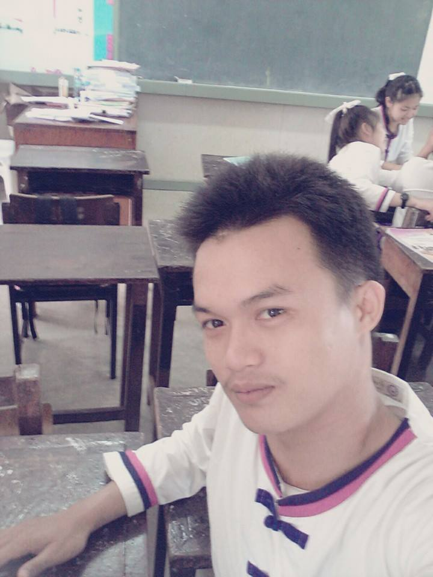
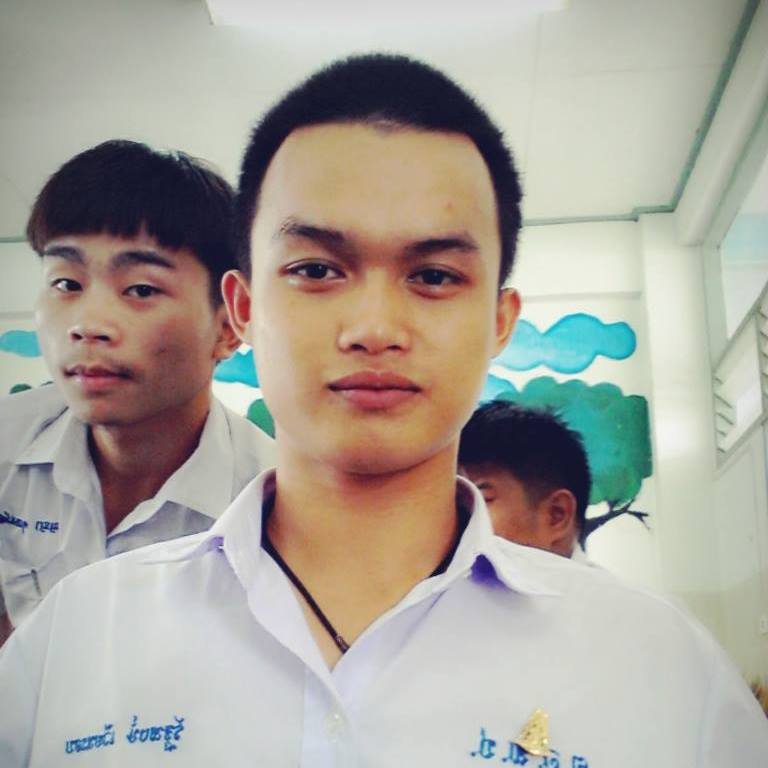
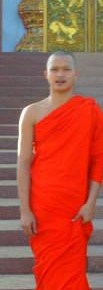

|
|
สวัสดีผมช่อพีทผมจบมาจากดอนศิลาางามวิทยามาเรียนต่อ ป.ตีที่ ม.อิสเทิร์นเอเชีย คณะ เทคโนโลยีสารสนเทศ ตอนนี้เรียนอยู่ชั้นปีที่ 2 ชอบเขียนเว็บแต่ชอบทำอะไรทุกๆอย่างที่ใช้คอมพิวเตอร์ จะเล่นถึงประวัติเเละโปรฟายส่วนตัว เริ่มจากฉันเป็นนองสุดท้องซึ่งมีพี่สาวคนนึงซึ่งตอนนี้จบไปแล้วครอบครัวฉันมี 4 คน พ่อแม่พี่ ซึ่งตอนนี้ยังอยู่ครบ ฉันจบจากดอนศิลาซึ่งฉันเรียนดอนศิลาแค่ช่วงเทอม 2 ม.6 ฉันเป็นคนชอบนอกกรอบไม่ชอบทำตามใครและดื้อมากจนพ่อแม่คิดถอดใจว่าเรียนคงไม่ไหวซึ่งในตอนเด็กๆฉันย้ายโรงเรียนบ่อยมากตอนฉันอยู่ ป.4 ฉันย้ายไปที่ เด็กดีพิทยาคม พอจบ ม.2 ฉันย้ายไปบวชเรียนได้ 3 ปี ฉันสึกออกมาเรียนต่อที่เตรียมพัฒ ซึ่งเรียนเตรียมพัฒได้ 2 ปีฉันก็ย้ายไปเรียนดอนศิลาจนจบ ม.6 แล้วตัดสินใจไปสอบที่ ม.พะเยาแต่ฉันไม่ไปสอบเพราะขี้เกียจฉันเลยตัดสินใจเพื่อจะมาเข้าที่ ม.อิสเทิร์นเพราะมันไม่ได้สอบเข้าเป็นเอกชนเพราะพี่สาวฉันก็จบจาก ม.อิส มาเหมือนกัน จึงออกเดินทาจากบ้านมาอยู่ปทุมเเล้วเรียนหนังสือซึ่งแรกๆฉันสนใจเรื่องโค้ดมากๆแต่พอค้นหาไปเรื่อยๆ ซึ่งไม่มีที่ปรึกษาที่จะถามในสิ่งที่ไม่รู้ได้ฉันจึงล้มความคิดที่จะค้นหาต่อไป ซึ่งฉันเป็นคนเข้าคนยากด้วยความระเเวงในทุกสิ่งฉันจึงแทบไม่มีเพื่อน ฉันจึงคิดปล่อยไปตามชะตากรรมเถอะไม่ฝึกไฟแห่งความพยายามดับลง จนมาวันนี้ได้เรียนเกี่ยวกับ html ฉันจึงพยายามที่จะสร้างเว็บโปรไฟล์ของฉันไห้มันดีที่สุด จากความรู้อันน้อยนิดที่ฉันมี
  